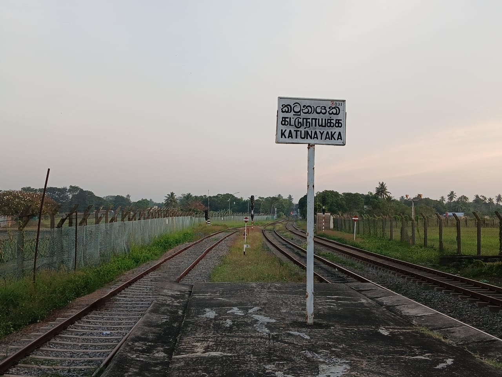
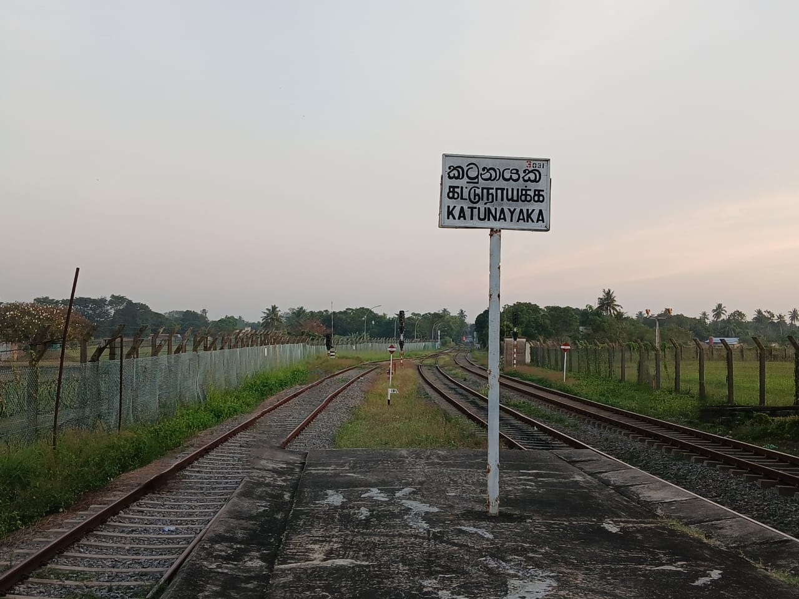

Class S8 is a DMU made by Hitachi and Hyundai and were imported in the year 1991. This is the oldest operating DMU in Sri Lanka [Wikipedia]
Carriages
The Class S8 DMU only has 3rd class carriages as it is mostly used for commuter services. These come in sets,
- 1 Driver power car
- 4 Third class carriages
- 1 Driver trailer car
The power car may be at the front pulling the train or at the back pushing everything. Two of these sets can be chained togather with power cars facing away in a way that allows one power car to push while the other pulls. This is mostly done on busy hours to help with the crowd.
Facilities
Being a commuter service, The seating layout priorotises functionality over comfort. With rows of hard plastic seating facing inwards. You have plenty of space to stand up, as designed. Steel beams helps you hold on while standing although grabhandles aren't present. There are no Gangways in between cars so you cannot move between them without getting out of the train. There is basic LED lighting and some fans which don't work half the time. Doors are also manual as usual in South Asian trains. There are storage racks to put small bags in at busy hours. Train journies on this will last at most 2 hours but lavatories are not available. Overall pretty torn out but gets the job done.
Technology
The Class S8 runs on Diesel, as every other train in Sri Lanka. It has no computers and is entirely manual. Everything is controlled with simple switches and levers as seen on the image below.
Routes
The class S8 DMU travels through the classic commuter routes.
- Main Line until Rambukkana
- Coastal Line until Aluthgama
- Puttalam Line
- Kelani Valley Line

 


Liveries
The class S8 comes in its normal livery, which is a distinctive orange, grey and white paint job. Ironically, it matches pretty well with rust most of these have gathered throught the years of coastal use. This is a hotspot for different company advertisements as this is sucessful as well as relatively cheap.
- Coca-Cola variant which is the result of a multi-million agreement between SLR and the Coca-Cola company. Which painted the train red and white with a Coca-Cola logo on the side.
Historical agreements
- Airtel - Painted red and white.
- AIA Insurance - Painted red and white.
- Etisalat Poson Wandana - Painted green
- Rhino - Painted yellow with red spray pain as fire.
- Exide - No information could be found.
- Union Bank - No information could be found.
- Sri Lanka Savings Bank - No information could be found.
- NDB Bank Poson Wandana - No information could be found.
- Seylan Bank - No information could be found.
There may be even more, probably lost to history...
Videos
Class S8 Arriving and leaving Ratmalana Railway Station in the morning rush hour, viewed from the passenger overpass.